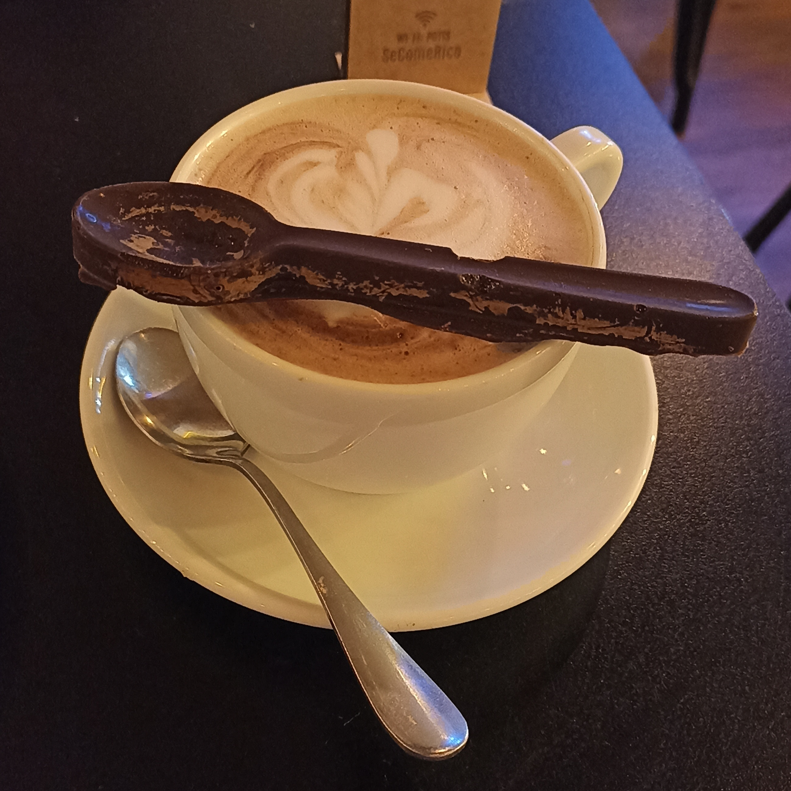

Explora la Cultura del Café en Montevideo
Ciudad Vieja - Como punto de partida
Caminar por las calles adoquinadas de la Ciudad Vieja es como hacer un viaje en el tiempo. Aquí, las antiguas fachadas y los edificios restaurados se mezclan con la vibrante vida urbana, creando un ambiente único. Entre estas calles se encuentran cafeterías con encanto, donde el aroma tentador del café recién tostado se mezcla con las conversaciones animadas de los lugareños y visitantes.
La Ciudad Vieja es el punto de partida perfecto para tu exploración de la cultura del café en Montevideo. Sumérgete en una taza de café mientras te empapas de la historia que se respira en cada esquina. Desde las tostadurías tradicionales hasta los modernos establecimientos, aquí encontrarás una variedad de opciones que te harán viajar a través del tiempo y el sabor..
Datos curiosos sobre el consumo de café en Uruguay
